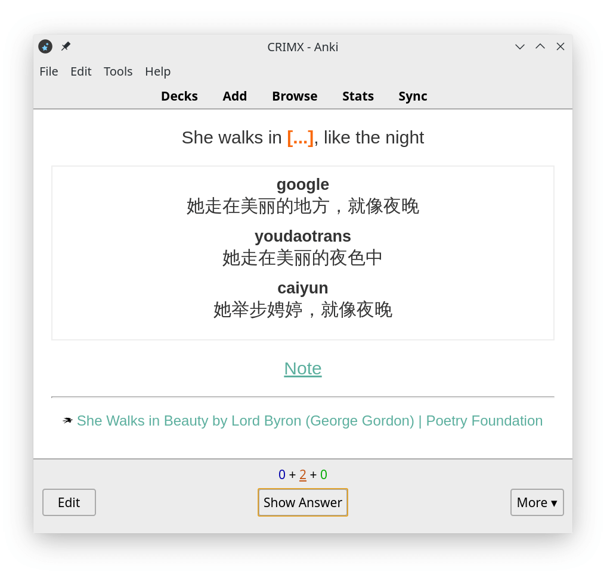
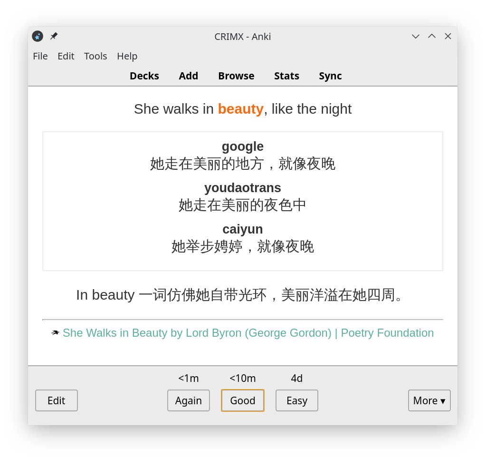

¶ How to use Saladict with Anki
::: warning
Help translate this page to English.
:::
¶ 为什么选择 Anki
可以看看这个由 YJango 制作的视频「我们十几年的外语教育方法几乎全错了」，与沙拉查词的设计理念十分契合。
大部分的背单词 App 思路都是展示一个单词与它的多个常见意思，然后让用户记住这个关联。有的平台声称有大量情景对白、真实语料，但这些语料更多仅仅是作为参考资料存在。基本逻辑依然是以单词为中心，记忆它的多个意思。
这样的方式适合应试记忆而缺乏实用性。基于准确语境的学习方式每个单词都只会有确切的意思，符合 SuperMemo 记忆理念，更容易形成条件反射。
当我们在网页上阅读文章，对不懂的单词进行划词翻译，最后收藏到沙拉查词生词本，此时单词的上下本也会一并保存并提供自动翻译。这些珍贵的真实语境都可以被完好的同步到 Anki 记忆库中，生成沙拉查词特制的精美卡片。
¶ Anki Connect 自动制卡
有了沙拉查词，Anki 制卡不需要再繁琐的手动配置，全部都可以一键生成。
首先需要安装 Anki 以及 Anki Connect 插件。
- Anki 菜单栏中找到 工具/Tools 👉 插件/Add-ons 👉 浏览与安装/Browse & Install。
- 输入
2055492159确认安装。 - 重启 Anki。
Windows 可能会出现防火墙提示，需要选择允许 Anki。Mac OS X Mavericks 可能需要调整 App Nap 以避免 Anki 被休眠，具体说明见其文档。
安装之后如果没有特殊要求使用默认配置即可，在沙拉查词设置 👉 单词管理/Notebook 中开启 Anki Connect 同步。
开启之后请保持 Anki 在后台运行。另外可以安装插件 85158043 让 Anki 最小化到系统托盘。每次保存单词到生词本的时候沙拉查词会自动制卡并同步到 Anki。相同的单词（以“Date”为准）会被跳过，如需强制更新可以在单词编辑器中更新。
例如沙拉查词中的单词：
时间截: 1234567890
单词: beauty
上下文: >
She walks in beauty, like the night
翻译: >
[:: google ::]
她走在美丽的地方，就像夜晚
[:: youdaotrans ::]
她走在美丽的夜色中
[:: caiyun ::]
她举步娉婷，就像夜晚
---------------
笔记: >
In beauty 一词仿佛她自带光环，美丽洋溢在她四周。
来源标题: >
She Walks in Beauty by Lord Byron (George Gordon) | Poetry Foundation
来源链接: >
https://www.poetryfoundation.org/poems/43844/she-walks-in-beauty
来源图标: >
https://www.poetryfoundation.org/assets/media/images/favicon-32x32.png?v=1.2.9
在保存到 Anki 后会成为
Date: 1234567890
Text: beauty
Context: >
She walks in beauty, like the night
ContextCloze: >
She walks in {{c1::beauty}}, like the night
Translation: >
<div class="trans"><span class="trans_title">google</span><div class="trans_content">她走在美丽的地方，就像夜晚</div><span class="trans_title">youdaotrans</span><div class="trans_content">她走在美丽的夜色中</div><span class="trans_title">caiyun</span><div class="trans_content">她举步娉婷，就像夜晚</div></div>
Note: >
In beauty 一词仿佛她自带光环，美丽洋溢在她四周。
Title: >
She Walks in Beauty by Lord Byron (George Gordon) | Poetry Foundation
Url: >
https://www.poetryfoundation.org/poems/43844/she-walks-in-beauty
Favicon: >
https://www.poetryfoundation.org/assets/media/images/favicon-32x32.png?v=1.2.9
Audio: ''
其中这些 Date, Text, Context, ContextCloze, Translation, Note, Title, Url, Favicon, Audio 为 Anki 的笔记域“Note fields”。
如果想自定义卡片请不要更改这些名字，而是直接修改或添加新的卡片类型。Anki 的杀手锏之一便是笔记与卡片分离，见前文概念资料。
同时我们可以注意到这些名字与前面沙拉单词基本一一对应，但是多了 ContextCloze 和 Audio。其中 Audio 为待实现的发音功能；而 ContextCloze 仔细看它的值，关键字 beauty 被沙拉查词替换成了 {{ c1::beauty }}，这是用于生成 Anki 填空卡片。原有的上下文依然保留到 Contex. 方便用户自行制作其它卡片。
结合沙拉查词默认生成的填空题卡片样式，可以得到以下效果：

其中关键字被自动挖空；自动生成的翻译已同时自动排好版；个人笔记被作为提示隐藏起来，点击即可展开；来源保留在下方。
卡片背面：

¶ 文本方式导入
Anki 同时支持以文本方式导入笔记，但如果能用 Anki Connect 还是建议使用 Anki Connect 更方便。
¶ Note Type
第一次导入前我们需要在 Anki 中新建 note type，内置的只有正反面 Question 和 Answer ，如果觉得够用也可以。
- 点开
Tools -> Manage Note Types浏览所有 note types ，点Add添加。 - 高级的可自行选择，这里我们选最基础的
Add: Basic。 - 填写名字，如 Saladict Notebook。
- 然后看到列表中添加成功了，选中，点击
Fields编辑字段。 - 可以看到默认只提供了
Front和Back，全部删掉或直接改名，根据需要换成 Saladict 的几个字段Word,Context,Translation,Note,Source Title,Source URL,Source Favicon。这里我们按顺序添加Word,Context,Translation,Note。 - Anki 会提示下次同步将完全覆盖，如果没有其它设备尚未同步，点确认。
- 添加完后
Close回到列表。点开Cards编辑卡片模板。 - 可以看到卡片模板分为前后。根据需要填写，
{{}}中的就是我们刚才填写的字段，会被自动替换为具体内容。提供一个简单的模板：- Front Template:
<p>{{Word}}</p> <p>{{Context}}</p> - Back Template
{{FrontSide}} <hr id=answer> <p>{{Translation}}</p> <p>{{Note}}</p>
- Front Template:
- 填写完
Close掉。Note types 添加完毕。
¶ 导出单词
在 Saladict 生词本或者查词记录中导出单词，可导出选中或全部导出。Anki 会自动识别重复的。
导出时编写模板，根据上面 Note Type 字段的顺序导出，用 1 左边的 ` 分割可以很好避免字符冲突。
比如按照上面例子的顺序 Word, Context, Translation, Note，我们的模板应该为
%text% ` %context% ` %trans% ` %note%
同时因为 Anki 文本导入是以行为单位识别的，导出的内容中有多行（如自动翻译会产生多行内容）注意将改选编辑器上方的「保留换行」。
- 可以选为
换行替换为空格，导出的文本将没有换行。 - 可以改选为
换行替换为<br>或换行替换为<p>。这是 Anki 可以识别的 HTML 标签（见下方配置）。在默认的样式下每行间<br>会比<p>更紧凑些。
导出保存文件。
¶ 导入单词
打开 Anki -> File -> Import 选择文件，导入类型选 Text separated by tabs or semicolons。
然后出现 Import 面板。几个选项：
Type就是上面的 Note Type ，选择 Saladict Notebook 。Deck是让卡片如何归类，通过::分割层级结构。点开后可以选择已有的也可以Add新建。这里我们新建一个单词::Saladict。Fields separated by: Space。我们换成`。- 然后就是忽略规则，按需选择。这里我们保持默认。
Allow HTML in fields。如果上面选择了<br>或<p>等 HTML 排版需要勾选。- 然后下面的
Field Mapping字段映射就可以看到识别到了上面定义的四个字段。两者匹配成功。 - 点击
Import可以看到导入结果。